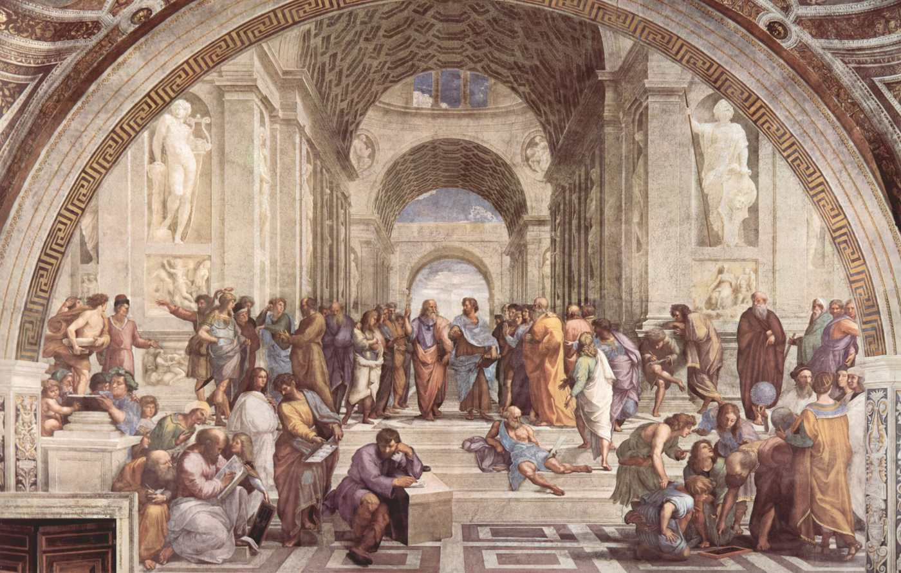
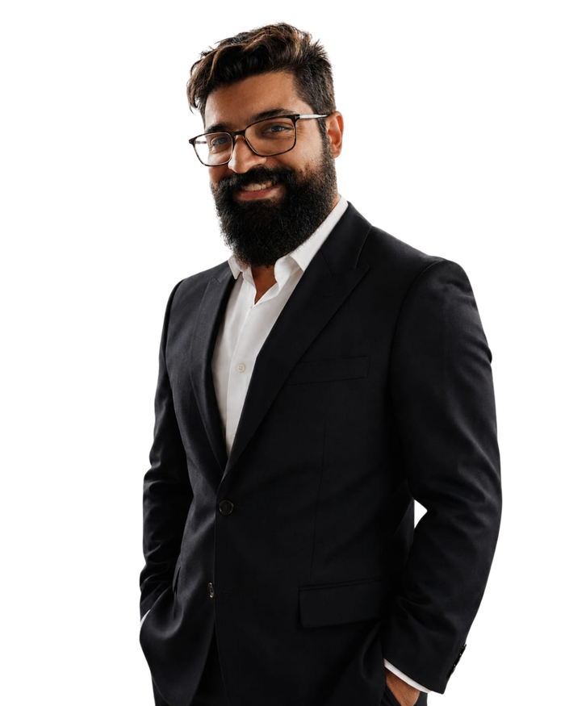
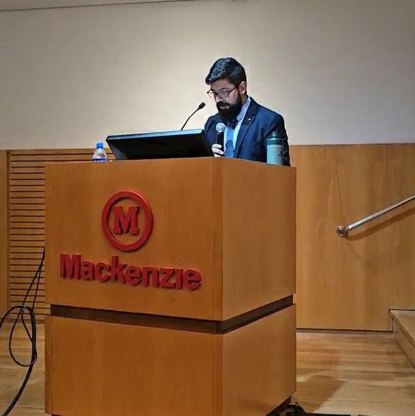
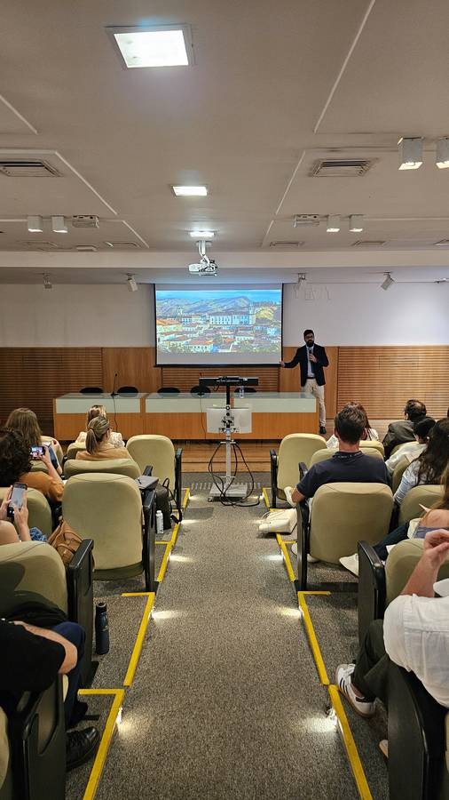
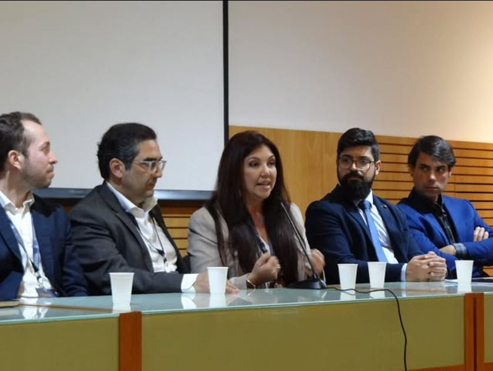
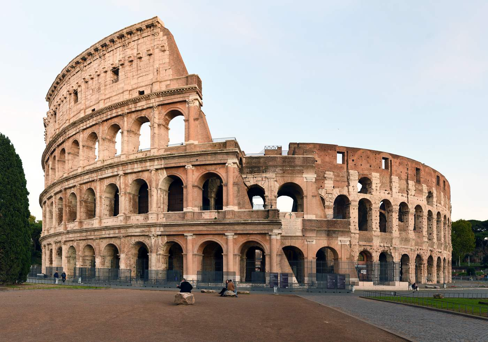

Aprenda a ler em profundidade as formas e ideias que cada época e civilização deixou no mundo.
Sua arquitetura, sua cidade e sua arte — para além da superfície. O Grupo de Estudos do Prof. Lucas Lima é uma comunidade de formação contínua dedicada à História e Teoria da Arquitetura, das Cidades e das Artes, com aulas ao vivo, espaço para perguntas, gravações, análises aprofundadas de obras e uma biblioteca digital de materiais selecionados.
A informação está em toda parte. A profundidade precisa ser aprendida.
Vivemos cercados por imagens, obras, edifícios, cidades, museus e paisagens, mas raramente aprendemos a lê-los em profundidade. Este grupo nasce para desenvolver esse olhar: perceber as ideias, os valores, a história e a visão de mundo materializados na arquitetura, na arte e nas cidades — seja diante de uma obra, em um projeto ou durante uma viagem.
É para arquitetos, designers, artistas, jornalistas, estudantes, profissionais criativos, viajantes e todos que desejam enriquecer sua formação cultural — porque conhecer uma obra é diferente de saber lê-la, assim como conhecer uma cidade é diferente de compreender como e por que ela se tornou aquilo que é.
É esse solo que o Grupo de Estudos existe para construir: aula após aula, obra após obra, ideia após ideia, com tempo para ler, discutir, pensar e aprofundar.
Uma estrutura pensada para formação real, não para consumo de conteúdo.
Aulas ao vivo
Encontros semanais para estudar autores, obras e períodos com tempo para aprofundar — não para correr.
Perguntas e discussão
Cada aula é também uma conversa: suas dúvidas, leituras e ideias entram no debate.
Gravações completas
Tudo fica disponível para rever, revisitar e estudar no seu próprio tempo.
Análise de obras
Edifícios, cidades, pinturas e textos lidos com rigor crítico — não apenas descritos.
Biblioteca digital
Uma seleção curada de textos, imagens e materiais de apoio, organizada e em crescimento contínuo.
"Um grupo pequeno, próximo e acompanhado de perto."
Prof. Lucas LimaArquitetura, cidade e arte não se entendem isoladamente, nem separadas das ideias que as produziram.
São expressões de uma mesma realidade histórica, em suas dimensões estéticas, culturais e filosóficas. O grupo estuda a interseção entre ideias, acontecimentos e formas, compreendendo como pensamento, religião, arte, arquitetura e cidade se relacionam e se materializam ao longo da história.
História e Teoria da Arquitetura e das Cidades
História da Arte
Acontecimentos e transformações do poder
Ideias e suas materializações no espaço e na arte

“Conhecer uma obra é diferente de saber lê-la.”Prof. Lucas Lima
Prof. Lucas Lima (M.Sc., MBA)
Arquiteto e urbanista, professor e pesquisador nas áreas de História da Arte, Arquitetura e Urbanismo. Sua trajetória reúne três dimensões que estão no centro deste grupo — pesquisa acadêmica, prática profissional e ensino — e é a partir dessa experiência, entre a sala de aula, o canteiro de obras e a pesquisa internacional, que ele propõe este espaço de estudo.




O impacto costuma durar bem além da aula.
Aprendi que o design não se trata só de desenho — a palavra carrega o sentido de projeto, de desígnio: intenção, investigação, metodologia, uma visão de mundo.
Foi o único professor que tratou a teoria de forma verdadeiramente intensa, ampliando nossa base intelectual. Desde então, não vejo mais um projeto com um olhar automático.
Suas aulas me proporcionaram uma nova visão sobre o papel do arquiteto e a responsabilidade social de cada projeto. Sempre que penso em arquitetura, penso nele.
O que mais me inspirou foi ir além da superfície. Entendi que a vida intelectual é essencial à formação de um bom arquiteto — algo que sinto negligenciado no meio.
A metodologia aberta, com espaço para as opiniões dos alunos, tornava as aulas mais dinâmicas e o aprendizado mais original e único.
Depoimentos selecionados de ex-alunos de disciplinas ministradas pelo Prof. Lucas Lima.
É para você se
- é arquiteto, urbanista, designer ou estudante e quer aprofundar sua compreensão sobre as ideias, a história e a cultura por trás do projeto
- é professor, pesquisador, jornalista ou profissional criativo e busca ampliar seu repertório cultural
- tem interesse genuíno por arte, arquitetura, cidades e cultura, mesmo sem formação formal nessas áreas
- viaja e quer enxergar além do que os olhos encontram, compreendendo melhor as obras, cidades e paisagens que visita
- valoriza uma formação cultural ampla e quer desenvolver, com tempo e profundidade, uma nova maneira de olhar o mundo
Não é para você se
- quer respostas rápidas e conteúdo superficial, sem tempo para leitura, reflexão e discussão
- busca apenas acumular informações, sem interesse em compreender as relações entre arte, arquitetura, cidade, história e cultura
- prefere uma experiência massificada e impessoal, sem espaço para perguntas, diálogo e aprofundamento

Um ano de formação contínua, dentro de um grupo pequeno e próximo.
A intenção é manter uma turma pequena, para que o Prof. Lucas Lima possa responder perguntas individualmente, conversar, conhecer e acompanhar cada participante ao longo da formação.
ou R$ 3.540 / ano à vista
- Aulas ao vivo semanais
- Gravações completas de todas as aulas
- Espaço aberto para perguntas e discussão
- Análises aprofundadas de obras, autores e períodos
- Biblioteca digital de materiais selecionados
- Grupo pequeno, com acompanhamento próximo do professor
Pagamento processado com segurança pela Hotmart · cartão, Apple Pay, PayPal ou parcelado. Direito de arrependimento em até 7 dias após a compra, conforme o Código de Defesa do Consumidor.
Antes de começar
Preciso ser arquiteto para participar?
Não. O grupo recebe arquitetos, urbanistas, estudantes, professores e qualquer pessoa com interesse genuíno em história, teoria e crítica da arquitetura, das cidades e das artes.
Como funcionam as aulas ao vivo?
São encontros semanais por videoconferência, com espaço aberto para perguntas e discussão ao longo da aula.
E se eu não puder assistir ao vivo?
Sem problema: todas as aulas são gravadas e ficam disponíveis na biblioteca do grupo para você assistir no seu tempo, quantas vezes quiser.
O que tem na biblioteca digital?
Uma seleção curada de textos, imagens e materiais de apoio escolhidos pelo professor, organizada por tema e em atualização contínua.
Como funciona o pagamento?
A assinatura é anual, processada com segurança pela Hotmart, com opção de pagamento à vista ou parcelado no cartão.
Aprenda a olhar para a arquitetura, a cidade e a arte para além da superfície.Quero fazer parte do grupo